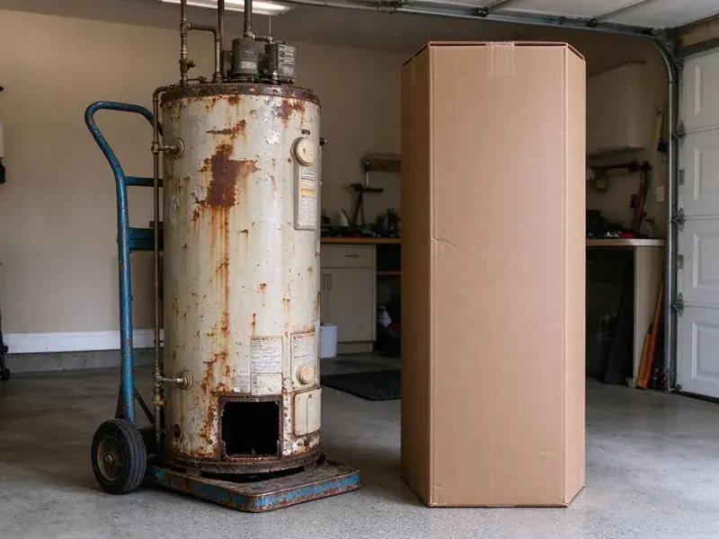

Pipe Replacement in Millcreek, UT
Brown water first thing in the morning? Old galvanized pipe is the usual cause. Pipe replacement in Millcreek, UT.
- Flexible Repipe Scheduling
- Drywall Patching Included
- Prompt Scheduling
- Written Estimates
A Repipe Done Right in Millcreek, UT.
Most whole-home repipes take two to four days.
Local Repiping in Millcreek, UT
BPK Plumbing handles the parts people forget. The permit gets pulled before work starts. Inspections happen before walls close, we pressure test the new system, leaving smooth patches you can finish. One crew, start to finish.
Our expertise includes:
- Drywall repair after repipes
- Polybutylene removal
- Pinhole-leak copper repiping

Additional Plumbing Replacement Services in Millcreek, UT
When repairs are no longer enough, our replacement services in Millcreek, UT deliver modern, efficient equipment installed right.


Customers
Why Choose BPK Plumbing for Pipe Replacement in Millcreek, UT?
A repipe is a big decision. We do not recommend it unless the pipe is truly at the end, and we show you what we see, from corroded galvanized threads to copper with pits you can feel with a fingernail, so you can judge the condition for yourself. Facts first.
- Local Knowledge, We know the pipe materials and layouts common in Millcreek homes across different eras.
- Tested Systems, The whole system is tested before the walls close.
- Code Compliant, Permits get pulled and inspections passed.
Citywide Coverage
Slab homes, two-story homes and homes with finished basements each have their own challenges. Routes get mapped first. Across Millcreek, that often means running new lines through the attic space instead of opening floors.
Experienced Team
Every plumber here can sweat copper, crimp or expand PEX by hand, and connect old and new pipe properly. Bad joints cause callbacks. We pressure test every system before walls close.
Safety-First Approach
Safety comes first on every job. We follow Utah code and safe work practices. Torches for copper get used with fire shields and a fire watch, so open flames are always controlled. Corners do not get cut.
Trusted Certified Millcreek Plumbing Services Professionals
At BPK Plumbing, we take pride in licensed, certified plumbing services throughout Millcreek, UT. Credentials matter in this trade. Our plumbers hold recognized industry credentials, and they follow strict safety and quality rules on every repair, installation and maintenance call we run.
Call Us Now PHCC Plumbing Contractor Recognition
PHCC Plumbing Contractor Recognition Better Business Bureau (BBB) Accreditation
Better Business Bureau (BBB) Accreditation Angi Certified Pro
Angi Certified Pro ISO 9001 Quality Management Certification
ISO 9001 Quality Management CertificationWhat Goes Into a Repipe in Millcreek, UT
Corroded Pipe Replacement in Millcreek, UT
Corrosion shows up as green or white crust on copper, rust on steel, or pinholes that drip. Some water is harder on pipe. We replace corroded sections or the whole system depending on how widespread the damage is, and we check the water heater connections and shutoffs since they often corrode too. Look at the joints.

PEX Pipe Replacement in Millcreek
PEX bends around corners and comes in long rolls, so a typical repipe needs fewer fittings than copper would on the same layout. Freezing temperatures are a regular part of Utah winters, and pipes in garages, crawlspaces and exterior walls can freeze during cold stretches. It often survives freezing where copper would crack. We use PEX-a with expansion fittings where possible, keeping flow strong at each joint. Faster install.
Copper Pipe Replacement in Millcreek, UT
Copper still has fans. It is durable and heat tolerant. We install Type L copper for most interior supply lines, sweat or press the joints, and support every run with hangers at the spacing code requires, so the new pipe does not rattle or sag. Costs more than PEX.
Whole-Home Repiping in Millcreek
Repiping sounds bigger than it is. Most homes stay livable during the job. We work room by room, restore water most evenings, and keep dust down with plastic sheeting and drop cloths, finishing with smooth patches ready for paint. Clean finish.
Galvanized Pipe Removal in Millcreek, UT
Removing every piece is rarely needed. It is disconnected and capped, while new lines run beside it, so we avoid tearing open walls just to pull out dead pipe. Only accessible pipe comes out.
Copper Pipe Replacement for Older Homes in Millcreek, UT
Older homes sometimes have copper that is thin from decades of use. Pinholes start showing up. We replace it with new Type L copper or PEX, and fixing awkward runs from past remodels. Better flow.
Commercial Pipe Replacement in Millcreek
Commercial buildings often have larger supply lines and more fixtures. Downtime costs money. We plan pipe replacement in phases whenever the layout allows it, so only part of the building is offline at a time. Night work available.

Full Repipes for Older Homes in Millcreek
Homes from the 1950s and 1960s often still have original galvanized pipe. That pipe is worn out. A full repipe brings new PEX or copper to every fixture, and fixes pressure and water color at once. Worth it.
Local Pipe Replacement Near Me in Millcreek, UT
Local repiping matters because homes in an area were often built with the same materials. Streets often have the same pipe. We know which homes around Millcreek tend to have galvanized, poly or thin copper, which helps us predict the scope before we inspect. Saves time.
Being close means we can come back for the inspection. Repipes often need one before walls close. We plan our schedule in Millcreek around inspection dates and drywall crews, so the walls stay open only as long as needed. Then patching.
BPK Plumbing at a Glance
- Licensed and insured plumbers serving Millcreek, UT
- Same-day appointments and 24/7 emergency response
- Upfront, flat-rate pricing before work begins
- 4.8-star rated by 470+ Utah customers
Millcreek Map
Millcreek Information
- Population
- 62,205
- Area codes
- 385/801/435
- Service area
- Millcreek and communities within 40 miles
- Nearby
- Murray, Taylorsville, Salt Lake City, Sandy
Galvanized pipe closes up with rust over the years, and polybutylene can split without warning, which is why so many older homes need repiping.
Expert Services
Reach out to BPK Plumbing for honest, reliable plumbing from people who know the trade in Millcreek, UT.
Our Specialized Plumbing Services in Millcreek, UT
At BPK Plumbing, you get every kind of plumbing service from one company across Millcreek, UT. We go from leak detection all the way to full system installations, for homes and commercial buildings, and we do it quickly at a fair price. Explore our core services below:


Our Pipe Replacement Steps in Millcreek, UT
Here is what to expect when we replace your pipes.
Call and Describe It
Call BPK Plumbing at (385) 543-4073 and tell us what you are seeing. Where the leaks or rust show up helps a lot.
Inspect the Pipe
We look at the pipe at the meter, heater and fixtures in Millcreek to see how far the damage goes.
Plan and Price
You get a written scope and price. Routes and openings get mapped.
Frequently Asked Questions About Pipe Replacement in Millcreek
A whole-home PEX repipe for a typical single-story home generally runs $5,000 to $12,000. Copper and larger homes can run $10,000 to $18,000, while a single section or branch often costs $500 to $3,000. Written price after inspection.
Almost always. We pull it. Inspectors want to see the new pipe and every joint before the walls close up, so we schedule around their visit. Signed copy provided.
Rusty water, leaks and low pressure. Old galvanized pipe is a big sign.
Copper and PEX both commonly last 50 years. Water chemistry affects both. Good installation, proper support and steady water pressure under 80 psi all extend life. Install quality counts.
An arid climate with hot summers, cold winters and big daily temperature swings puts steady stress on plumbing across Utah. Freezing temperatures are a regular part of Utah winters, and pipes in garages, crawlspaces and exterior walls can freeze during cold stretches. Pipes in exterior walls, attics and crawlspaces face the biggest swings. We route new lines away from cold spots when possible, insulate where they cannot be moved, and choose PEX in freeze-prone areas. Smart routing.
Usually rust. Old steel pipe often causes it. If the color shows up first thing in the morning or after a shutoff and clears after running a few minutes, the pipe inside the house is the likely source. We test to confirm.
Small jobs finish the same day. A whole-home repipe usually takes two to four days for a typical house, plus time for inspection and drywall patching afterward. Larger homes take longer.
We provide a written labor warranty on every pipe replacement. Manufacturers warranty the pipe. If a joint we made ever leaks, that repair is on us, and the terms are on your estimate before you sign.
What People Are Saying About Our Plumbing Experts?

Carlos V.
Our house still had galvanized pipe, and upstairs the shower was a trickle. The crew repiped everything in PEX over three days and patched every drywall hole before they left. The pressure difference is night and day.
Repiping · West Jordan, UT
Diane F.
My kitchen faucet had dripped for months and I finally got tired of hearing it at night. BPK Plumbing came out the next morning, replaced the cartridge and the O rings, and tightened a loose base that was letting water under the sink.
Faucet Repair · West Valley City, UT
Laura S.
Our 40 gallon tank started leaking from the bottom after thirteen years. The tech hauled the old one out, set a new unit with a fresh expansion tank, and had hot water running in about four hours. He took the old tank with him too.
Water Heater Replacement · Murray, UTPatricia H.
We had a slab leak that two other companies could not find. BPK Plumbing located it in under an hour with a listening device. They rerouted the line through the attic instead of breaking up the floor, so we kept our kitchen tile.
Slab Leak Repair · West Valley City, UTMonica A.
Our water bill nearly doubled in one month with no change in how we used water. The tech checked the meter, heard the leak under the hallway with his equipment, and opened a hole about a foot square. Fixed the same day.
Slab Leak Repair · West Jordan, UT
Lisa C.
Water was pouring out from under the washing machine on a holiday weekend. BPK Plumbing talked me through closing the valves over the phone and had a plumber at the house within ninety minutes. It was a burst fill hose.
Emergency Plumbing · Taylorsville, UT